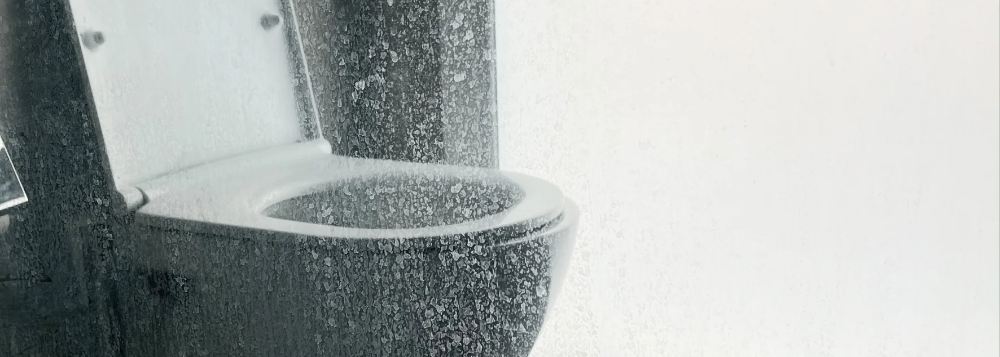

- Eau très dure à Payerne : 45.3 °fH (mesure officielle 2024, au-delà de 30 °fH = eau très dure)
- Calcaire léger : vinaigre blanc + temps de pose long (recettes maison efficaces)
- Calcaire incrusté : produits professionnels à pH 0.5 indispensables
- Surfaces à risque : chrome, inox et vitres de douche s'abîment facilement
- Erreur fatale : mélanger vinaigre + eau de Javel (gaz toxique)
Pourquoi le calcaire est un vrai problème en Suisse romande
L'eau du robinet en Suisse romande est l'une des plus dures du pays. Selon les mesures officielles de la commune de Payerne, la dureté de l'eau a atteint 45.3 °fH en juin 2024. Pour comparaison, une eau est considérée très dure au-delà de 30 °fH. C'est aussi le cas dans toute la Broye, le Gros-de-Vaud et certaines vallées du canton.
Conséquence directe : le calcaire s'incruste plus vite et plus profondément qu'ailleurs. Les douches, robinets et parois vitrées en subissent les effets en quelques semaines seulement.
Les 3 niveaux de calcaire et la solution adaptée
Avant de choisir un produit, identifiez le niveau de calcaire auquel vous faites face. Tous les produits ne fonctionnent pas sur tous les niveaux.
Des vitres impeccables, sans effort
Intérieur et extérieur · Zéro trace garanti
Voir le service vitres →| Niveau | Aspect visuel | Solution efficace |
|---|---|---|
| Léger | Traces blanches récentes, films transparents | Vinaigre blanc, citron, bicarbonate |
| Moyen | Dépôts visibles, surfaces blanchies | Produits anti-calcaire du commerce |
| Incrusté | Croûtes blanches dures, vitres opaques | Produits professionnels (pH ≤ 1) |
C'est ce diagnostic qui fait la différence entre 30 minutes de travail efficace et 3 heures de frottage sans résultat.
Les recettes de grand-mère : ce qui marche (et ce qui ne marche pas)
Vinaigre blanc — efficace, mais avec ses limites
Le vinaigre blanc est le classique. Son acidité (pH 2.4) dissout le calcaire léger. La méthode :
- Vaporiser pur ou dilué à 50/50 avec de l'eau
- Laisser poser au minimum 30 minutes
- Frotter avec une brosse douce
- Rincer abondamment
Pour les robinets : enroulez un chiffon imbibé autour de la pièce, fixez avec un élastique, laissez agir 1 heure.
Bicarbonate de soude + citron — pour les traces moyennes
Le mélange crée une légère effervescence qui décolle le calcaire :
- Saupoudrer de bicarbonate la zone humide
- Verser du jus de citron par-dessus
- Laisser agir 15 minutes
- Frotter et rincer
Les produits du commerce : utiles mais à manier avec précaution
Les anti-calcaires en grande surface (CIF, Antikal, Mr. Propre) ont un pH compris entre 1.5 et 3. Ils sont efficaces sur le calcaire moyen, mais présentent deux risques importants :
Risque 1 : abîmer les surfaces fragiles
Tous les produits ne conviennent pas à tous les matériaux. Les surfaces les plus sensibles dans une salle de bain :
- Chrome et inox : un produit trop acide laisse des taches mates définitives
- Vitres de douche : un produit mal rincé crée un voile blanchâtre permanent
- Joints silicone : peuvent jaunir ou se décoller avec un produit trop agressif
- Marbre et pierre naturelle : strictement interdits aux anti-calcaires acides
Risque 2 : temps de pose inconnu
C'est l'erreur la plus fréquente. Les étiquettes indiquent "laisser agir quelques minutes", mais ce délai dépend en réalité du type de surface, de l'épaisseur de la couche de calcaire, de l'usure du matériau et de la température de la pièce.

L'approche professionnelle : pH 0.5 et expertise du matériau
Pour le calcaire fortement incrusté — typiquement avant un état des lieux ou sur une douche ancienne — les professionnels utilisent des produits à pH 0.5. C'est environ 100 fois plus acide qu'un produit du commerce.
Pourquoi ces produits ne sont pas en grande surface
Ces produits sont efficaces mais demandent une vraie expertise :
- Temps de pose précis selon la surface (de 30 secondes à 5 minutes maximum)
- Application ciblée pour ne pas attaquer les joints ou les chromes
- Rinçage abondant et immédiat sous peine de dégradation du matériau
- Équipement de protection obligatoire (gants nitriles, lunettes, ventilation)
Notre approche chez Malo Nettoyage
Nous utilisons environ 90% de produits biodégradables pour le nettoyage quotidien. Mais sur le calcaire incrusté, l'efficacité passe par des produits forts utilisés avec méthode. Pour un état des lieux, une régie ou un propriétaire exige une salle de bain et une cuisine parfaitement sans calcaire. Les recettes de grand-mère ne suffisent pas dans ce contexte.
Le calcaire selon la surface : adapter sa méthode
Robinets et pommeau de douche (chrome)
Démonter le pommeau et le tremper dans un bain de vinaigre tiède pendant 1 heure. Pour les robinets fixes : chiffon imbibé enroulé, jamais de produit acide laissé plus de 15 minutes. Rincer abondamment et sécher avec un chiffon microfibre pour éviter les nouvelles traces.
Parois vitrées de douche
Les vitres de douche sont l'élément le plus difficile en présence d'eau très dure. Le calcaire s'incruste dans les micro-rayures invisibles du verre.
- Un produit anti-calcaire dilué peut suffire sur les vitres récentes
- Sur les vitres anciennes (plus de 5 ans), le calcaire est souvent ancré dans le matériau
- Prévention : raclette après chaque douche, qui retire l'eau avant qu'elle ne sèche
Joints, baignoire, lavabo (céramique, émail)
Céramique et émail tolèrent mieux les produits acides. Joints silicone : préférer un produit anti-calcaire neutre ou doux. Baignoire en acrylique : surtout pas de produit abrasif, qui raye définitivement.
Comment prévenir le calcaire au quotidien
Le meilleur nettoyage est celui qu'on n'a pas à refaire. Quelques habitudes simples :
- Passer une raclette sur les vitres et carrelages après chaque douche
- Essuyer les robinets après chaque utilisation
- Ventiler la salle de bain quotidiennement
- Détartrer une fois par mois en mode préventif (avant que ça s'incruste)
- Installer un adoucisseur d'eau si possible (recommandé au-delà de 32 °fH selon AquaSuisse)
FAQ – Nettoyer le calcaire dans la salle de bain
Quel est le meilleur produit pour enlever le calcaire incrusté ?
Pour un calcaire léger, le vinaigre blanc avec un temps de pose long (30 minutes minimum) reste très efficace. Pour un calcaire incrusté, les produits professionnels à pH 0.5 sont les seuls réellement efficaces, mais nécessitent une utilisation maîtrisée pour ne pas abîmer les surfaces.
Pourquoi le vinaigre blanc ne marche pas sur mon calcaire ?
Le vinaigre blanc a un pH de 2.4. Il fonctionne bien sur le calcaire récent ou léger, mais ses limites apparaissent rapidement sur le calcaire incrusté depuis plusieurs mois. Dans les régions à eau très dure comme la Broye ou le canton de Vaud, l'incrustation est plus rapide et plus profonde, ce qui rend le vinaigre insuffisant dans la majorité des cas.
Comment enlever le calcaire sur une vitre de douche sans la rayer ?
Évitez absolument les éponges abrasives et la laine d'acier, qui créent des micro-rayures où le calcaire s'incrustera encore plus. Utilisez une éponge douce ou un chiffon microfibre avec un produit anti-calcaire adapté au verre. Pour le calcaire ancien, l'intervention d'un professionnel est souvent plus sûre.
Quels produits ne jamais mélanger pour nettoyer le calcaire ?
Ne mélangez jamais un produit acide (vinaigre, anti-calcaire) avec de l'eau de Javel ou de l'ammoniac. La réaction dégage du chlore gazeux toxique pour les voies respiratoires. Utilisez les produits l'un après l'autre, avec rinçage abondant entre les deux.
Est-ce rentable de faire appel à un professionnel pour le calcaire ?
Pour un usage courant, non. Pour un état des lieux, une vente immobilière ou une salle de bain très entartrée après des années, oui. Le coût d'une intervention est souvent inférieur aux retenues sur caution potentielles, et le résultat est garanti. Un professionnel maîtrise les temps de pose, choisit le bon produit pour chaque surface et évite les dégradations.
En résumé
Nettoyer le calcaire dans la salle de bain demande d'adapter le produit au niveau d'encrassement. Recettes maison sur le léger, produits du commerce sur le moyen, produits professionnels sur l'incrusté. Dans la Broye et le canton de Vaud, l'eau particulièrement dure (45.3 °fH à Payerne) rend le calcaire plus tenace qu'ailleurs en Suisse — d'où l'importance de la prévention quotidienne et d'une méthode adaptée à chaque surface.